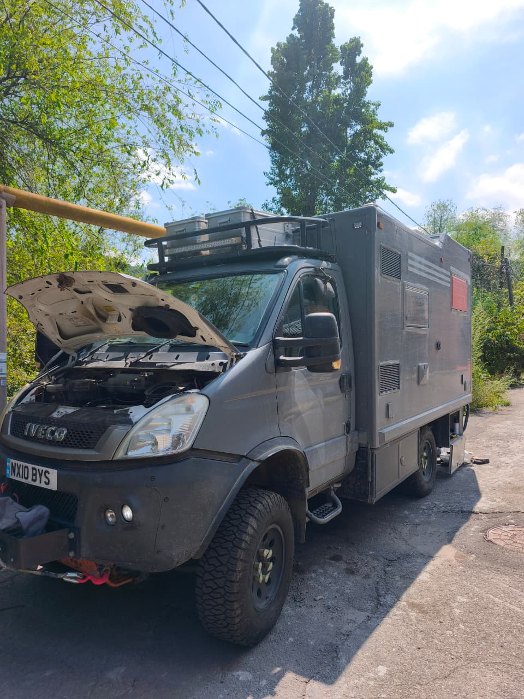
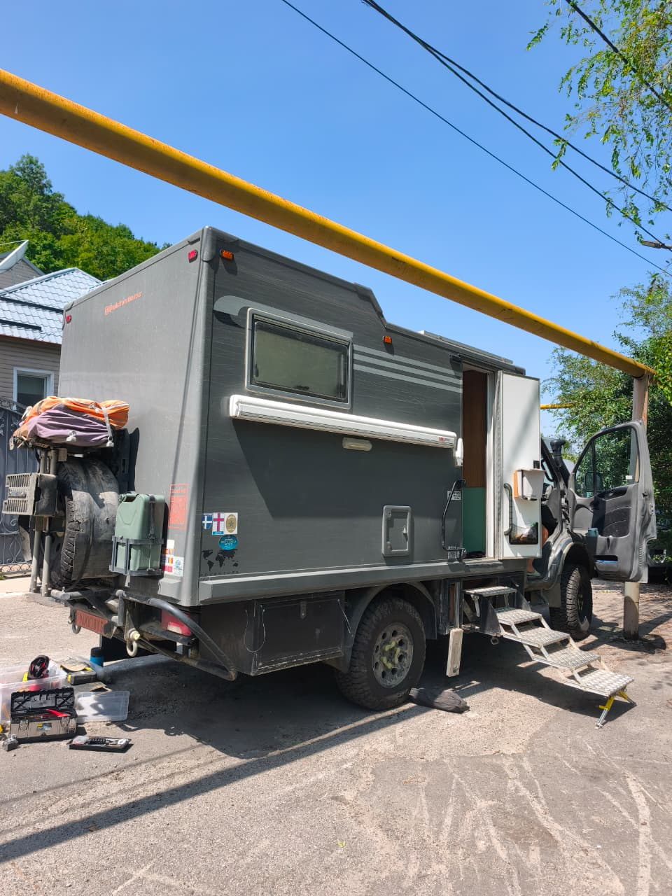
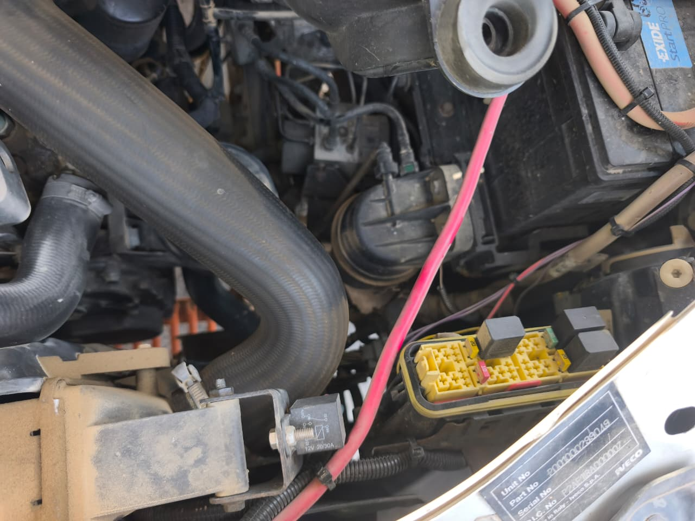
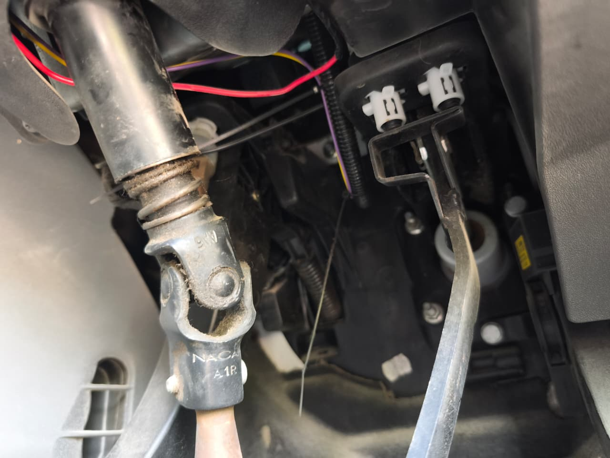
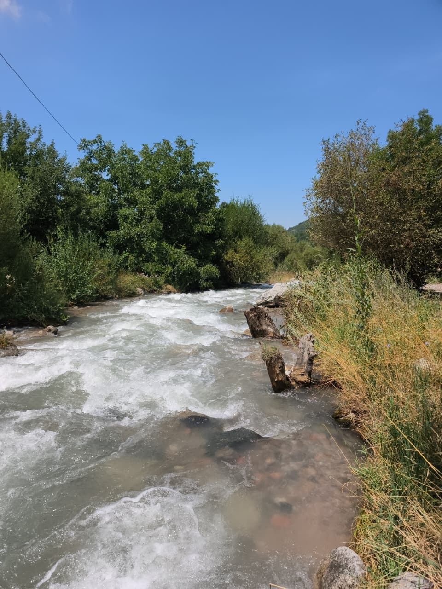
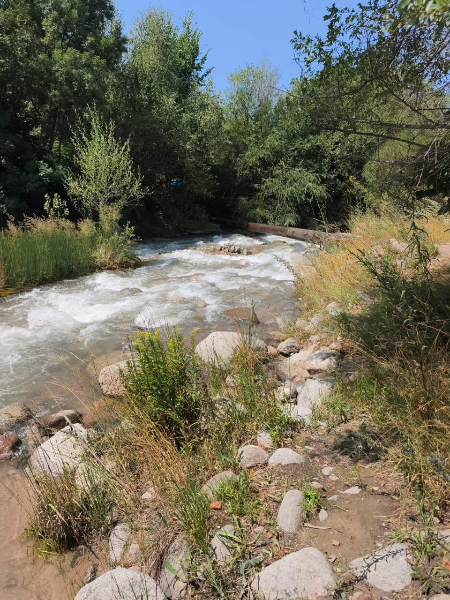
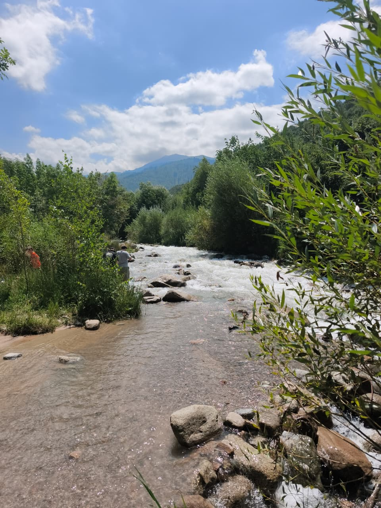

🚐 Автодом Iveco не запускался на горячую — причиной оказалось реле стартера
🚨 Жалоба владельцев
На выездную диагностику поступила заявка на автодом Iveco, который находился в урочище Медеу.
Владельцами оказались иностранные путешественники, следующие через Казахстан в Таиланд. Во время поездки возникла проблема: после прогрева двигателя автомобиль переставал запускаться.

Со слов владельцев:
- ⚠️ на холодном двигателе запуск происходил без проблем;
- ⚠️ после остановки на прогретом двигателе стартер не вращался;
- ⚠️ повторный запуск был невозможен до остывания автомобиля.
Учитывая удалённое место поломки и продолжение дальнего путешествия, требовалось быстро определить причину неисправности и восстановить работоспособность автомобиля.

🔍 Что показала диагностика?
На месте была проведена комплексная проверка системы запуска двигателя.
Выполнены следующие проверки:
- ✅ контактной группы замка зажигания;
- ✅ клемм аккумуляторной батареи;
- ✅ состояния аккумулятора;
- ✅ стартера;
- ✅ цепи управления стартером;
- ✅ реле стартера.
После последовательной проверки всех элементов удалось локализовать неисправность.

🛠️ Поиск причины
В ходе диагностики было установлено, что:
- аккумулятор исправен;
- контактная группа замка зажигания работает корректно;
- стартер находится в рабочем состоянии;
- проводка не имеет повреждений.
Причиной отсутствия вращения стартера стало неисправное реле стартера, которое переставало срабатывать после нагрева.
Такая неисправность может проявляться только на горячем двигателе, из-за чего её сложно определить без последовательной проверки всей цепи запуска.

🔧 Выполненные работы
Для устранения неисправности были выполнены:
- ✔️ диагностика системы запуска;
- ✔️ проверка электрических цепей;
- ✔️ проверка стартера;
- ✔️ проверка контактной группы замка зажигания;
- ✔️ замена неисправного реле стартера;
- ✔️ контрольная проверка запуска двигателя после ремонта.
✅ Результат
После замены реле стартера:
- ✔️ двигатель уверенно запускался как на холодную, так и на горячую;
- ✔️ проблема полностью исчезла;
- ✔️ владельцы смогли продолжить своё путешествие без дополнительных неисправностей.
💡 Рекомендация автоэлектрика
Если стартер не вращается только на горячем двигателе, не спешите менять сам стартер.
Причиной могут быть:
- 🔌 неисправное реле стартера;
- 🔑 изношенная контактная группа замка зажигания;
- 🔋 плохой контакт на клеммах аккумулятора;
- ⚡ неисправность силовой проводки;
- 🛠️ проблемы в цепи управления стартером.
Комплексная диагностика позволяет быстро определить настоящую причину и избежать лишних расходов.

❓ Когда необходима диагностика системы запуска?
Обратитесь к специалисту, если:
- стартер не крутит на горячем двигателе;
- запуск происходит через раз;
- слышен щелчок, но стартер не вращается;
- после длительной поездки автомобиль перестаёт запускаться;
- проблема появляется только после прогрева двигателя.
Своевременная диагностика помогает устранить неисправность до полного отказа системы запуска.
⚙️ Что входит в диагностику системы запуска?

Во время диагностики проверяются:
- 💻 электронные системы управления;
- 🔑 контактная группа замка зажигания;
- 🔋 аккумулятор и клеммы;
- ⚡ силовые кабели и масса;
- 🔄 реле стартера;
- 🔧 стартер и его цепи управления;
- 📊 напряжение при запуске двигателя.
После ремонта проводится обязательная контрольная проверка запуска в разных режимах работы двигателя.

⭐ Почему выбирают нас?
✔ Выездная диагностика автомобилей в городе и за его пределами.
✔ Оперативный поиск неисправностей на месте поломки.
✔ Проверка системы запуска без замены исправных деталей.
✔ Современное диагностическое оборудование.
✔ Помощь легковым автомобилям, коммерческому транспорту и автодомам.
👨🔧 Работы выполнил автоэлектрик Олег.
☎️ 8-701-121-11-10 Олег
Читайте также: «Nissan X-Trail 2021 не крутит стартер на холодную» и «Почему трещит реле в автомобиле — причины и решение проблемы».
Нужна помощь? Ремонт проводки авто в Алматы — выезд по городу и области.